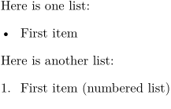
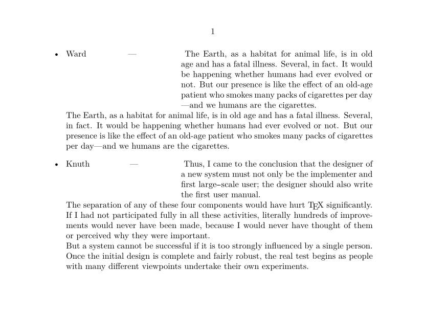

Contents
Summary
The command
\item
is used for itemization items
Settings
Description
Used in itemizations. Starts an ordinary item.
Examples
Example 1
-
Here is one list: \startitemize \item First item \stopitemize Here is another list: \startitemize[n] \item First item (numbered list) \stopitemize
- 
Item list of a special shape
-
\setuppapersize[A6,landscape] \define[1]\ItemCommand {\hangindent=1.5in \freezeparagraphproperties % needs a fairly new ConTeXt (mid-2021) \simplealignedbox{1.5in}{flushleft}{#1\hss--- } \ignorespaces} \setupitemize[command=\ItemCommand] \starttext \startitemize \item{Ward} \input ward \input ward \item{Knuth} \input knuth \stopitemize \stoptext
- 